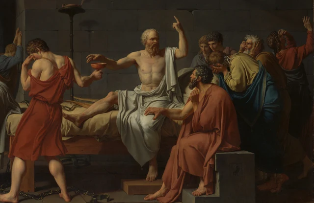

先看那隻還沒有接住杯子的手。手指彎曲著，停在杯沿上方；另一隻手卻舉向高處，食指豎起。坐在床上的人正要接受自己的死亡，嘴邊的話似乎還沒有說完。遞杯的年輕人把臉轉開，手卻仍伸向他。兩個人在一個極小的距離上相遇，又在目光裡彼此錯開。

畫中的事件發生在公元前399年的雅典。蘇格拉底被判死刑，最後一天仍與友人討論靈魂和死亡；柏拉圖的《斐多》是這場告別最重要的傳世敘述之一。大衛畫它時，距離事件已有兩千多年。這幅畫出自特呂代納家族的私人委託，1787年在巴黎沙龍展出，法國大革命還要兩年才爆發。在啟蒙時代，對個人原則、公共判斷與古代德性的關切，使這類題材具有現實分量；理解它，也需要先保留1787年這個具體時點。學術目錄，第106條
從那個尚未完成的接杯動作看下去：死亡將至，辯論未止。畫面一面樹立了蘇格拉底的堅決形象，一面讓周圍人的身體保留失去他的痛苦。順著這些身體看過去，還會遇到一個本來沒有到場的人。正是他的出現，使這場死亡同時面對自己的後來。
杯子之前還有一句話
這間牢房首先給人的感覺是硬。牆由大塊石料砌成，石塊之間的接縫在人物身後橫向延伸，床架和石座也有清楚的稜角。光沒有把石室照得通透；左方拱門深處仍很暗，人物退到臺階上，身體就小了、模糊了。前景的地面則留出一片空處，讓我們的視線從石板進入人群。
橫向展開的身體像浮雕一樣容易辨認。白衣的褶皺有明確的折面，裸露的肩膀、背部和胸膛從陰影中顯出體積。顏色也受到節制：大片灰褐的牆與地面之間，紅衣、黃衣和藍色披布聚在人物身上。尤其遞杯者的紅色，先把目光吸到中央偏左，再沿著他的手臂送向杯子。所謂新古典主義的清晰與秩序，在這裡有具體的形狀，不意味著畫裡的人都壓住了感情。
蘇格拉底的身體最明亮，也最敞開。披布從肩部垂下，在腰間聚攏，胸腹大部露在外面；頭抬起，軀幹保持直立，一條腿沿床伸出去。這個有力的身體經過理想化，與歷史上約七十歲的老人有距離。它使我們先感到生命仍然充沛，題名所說的死亡因而更迫近：即將被中斷的，正是眼前仍能說話、伸手和轉向他人的人。

右手的動作很小。指尖並未握住杯，也沒有縮回去；只需再向前一點，交接就會完成。左手卻把動作延長到頭頂以上，豎起的食指在暗牆前十分醒目。兩條手臂之間，是胸膛、臉與張開的嘴。我們可以把這組關係讀成兩種時間同時展開：一隻手走向不可撤回的結局，另一隻手仍為一句話爭取空間。
這種說話感也來自眼睛。蘇格拉底沒有低頭盯住杯口，他把臉轉向聽眾所在的一側。遞杯者則反過來：身體與手正在完成職責，頭卻低下、轉開，另一隻手靠近眼睛。杯成了兩人之間的聯繫，但沒有建立相互的凝視。一人看著還可以繼續的交談，一人承受著自己必須送出的東西。
這裡展示的是接杯之前，並非喝下毒藥後已經衰弱的身體。《斐多》的主要討論、飲毒、眾人的哭泣與最後躺下，本來有先後次序。大衛把討論和告別的力量壓到這個交接時刻，使我們能夠在一眼之內同時看見它們。繪畫不必把最後一天逐段複述，便能讓整段時間壓在一隻杯上。《斐多》，117a–118a
完成畫面看似篤定，製作過程卻有反覆。大都會的技術檢查發現，前臂的位置與手指輪廓曾經調整。這個幾乎要碰到杯沿的距離，是畫家安排出來的關係。技術研究 知道這一點後，我們可以再看那一點空隙：它既讓遞杯的動作清楚，又讓尚未完成的動作保持緊張。畫面沒有用更劇烈的掙扎製造危機，而是把危機放在下一刻。
理由沒有讓身體停止悲傷
蘇格拉底右側的人群靠得很近。前排赭紅衣男子抬頭看他，一隻手放在自己的下頜附近，另一隻手落在蘇格拉底大腿的披布上。後面兩張年輕的臉越過肩膀向前，視線仍集中在說話的人身上。再往右，有人俯下頭，把臉藏進雙手；有人把兩手舉到面頰旁，身體向後；最右邊的人仰起頭，手掌伸向畫外。

這些反應並不組成整齊的隊列。有人還在向前，有人已經向後；有人用目光抓住他，有人只能遮住自己的眼睛。近處兩人的紅衣也不一樣。遞杯者的衣料把轉開的後背與向前伸出的手連在一起；床旁男子的衣褶則向下垂落，把他安放在低處，仰望床上的人。同屬暖色的身體，從兩側接近中央的白衣，卻沒有做出相同的動作。
觸摸腿部的手尤其值得停留。蘇格拉底抬起的手指向遠處，友人的手卻落在可以摸到的身體上。即使聽懂了他關於靈魂的論證，人也還在這裡：有溫度，有重量，有一個即將空出來的位置。那隻手沒有阻止接杯，也沒有變成清楚的拉拽，它保留著接觸。悲傷在這裡並不需要證明自己比論證更正確；它讓論證必須面對一個具體的人將不再相伴。
《斐多》也沒有把這一天寫成眾人一致贊同的頌歌。開頭的敘述者記得，自己在快樂和悲痛之間來回；到了飲毒之後，他說自己的眼淚是為失去這樣一位同伴而流。討論能夠改變人怎樣理解死亡，卻沒有立即解除依戀。畫面中的眾人因此可以看作這場死亡的承受者，而不只是用來襯托主角堅定的陪襯。《斐多》，58e–59b、117c–e
這一點也改變了「勇氣」的分量。如果只盯住蘇格拉底的舉手姿態，他很容易成為一句孤立的格言。把目光移向與他相接、朝他靠近、又從他那裡退開的身體，就會發現他的決定發生在關係之中。畫面確實讚美堅持，但這份堅持的代價，仍由其他人的動作顯露。觀眾不必把掩面的人看得低一等，才承認中心人物的力量。
再低一點看，地上是鬆開的鐐銬和鏈條，蘇格拉底的腳踝露著。約束已經解除，監禁卻沒有結束；身體可以活動，接下來的結局依然無法在房間裡被避開。鏈條貼著石板，金屬的少量亮點與腳、布和木床交錯，使古代的故事具有觸手可及的物質條件。大衛讓哲學討論發生在這樣的地方：可以坐下，可以伸腿，也可以被執行死刑。

床上還有一把里拉琴，靠近伸出的腿。它不搶眼，卻能把我們帶回對話中尚未解決的問題。《斐多》裡，西米亞斯以琴與和諧的關係提出反對意見：如果靈魂像樂器產生的和聲，那麼樂器毀壞之後，和聲如何繼續存在？蘇格拉底隨後回應這一比喻。對話開頭還講到他依照夢的提示嘗試作詩，把哲學與「作樂」聯繫起來。畫裡的琴可以接到這些線索，卻不必被鎖定為單一寓意。《斐多》，60d–61b、85e–86d、91c–95a
於是，那根舉起的食指也值得重新理解。它有權威的姿態，但圍繞它的文本仍允許疑問、回應和修正。蘇格拉底在對話中還提醒朋友，不要只顧著贊同他本人，應當關心論證是否為真。本文願意把畫中的說話姿態放回這個過程：堅定可以是繼續討論的能力，未必意味著所有問題早已消失。《斐多》，89d–91c
沒有到場的人為何坐在這裡
目光一直跟隨杯子與右邊的人群，很容易錯過左下方的老人。他坐在床腳，身體轉向相反一側，頭低垂，兩手疊在腿上。灰白的衣料包著身體，細密的褶皺沿膝部落下。他沒有伸手加入中央的動作，腳旁卻放著卷軸、書寫工具和墨器。其他人的反應向外散開，他的姿勢像把一切收在裡面。

這位老人通常被辨認為柏拉圖。可《斐多》在列舉最後一天的在場者時，明確說柏拉圖大概病了。蘇格拉底死時，他還年輕，畫中卻已經白髮蒼蒼。更重要的是，《斐多》的講述者是斐多，他向另一個人轉述監獄裡的見聞；柏拉圖是寫下這篇對話的作者。事件、見證者的講述與作者的寫作，本來就隔著不同層次。《斐多》，57a–59c
因此，畫中這位老人不能簡單理解成正在回憶自己親見的場景。大衛讓一個後來的作者進入監獄，把不同時間編排在同一間屋子裡。中央有即將被中斷的話，床腳有使話語繼續流傳的書寫；同一張畫布既描繪失去，也容納對失去的重述。這是本文對這一安排的理解。
他的安靜與蘇格拉底的直立還有形式上的關係。一個壓低，一個上升；一個用衣料包住身體，一個露出胸膛；一個雙手疊起，一個雙臂張開。兩人並未相互凝視，觀眾的目光卻可以把他們連起來。左方的灰白衣料，也在距離之外回應中央明亮的白布，使這位退到邊緣的人沒有從構圖裡消失。
現在，房間的左右也不再只是疏密的區別。右側的人群把告別變成許多當下的身體反應；左邊的老人和書寫物把它推向以後。更遠處，拱門裡有人離開，樓梯通向看不見的外面。牢房關住了蘇格拉底，這幅畫卻為事件留下不止一個出口：離去的人、繼續記述的人，以及畫前重新讀這個故事的人。
這也說明歷史畫為何不能只按「是否像現場」來判斷。清晰的石牆、器物和衣褶讓場景獲得可信的質感，人物年齡與事件順序卻可以被重新組織。大衛把閱讀過的古代材料、自己的造型選擇和十八世紀觀眾關心的問題放進一幅畫裡。我們看到的，是歷史在後來獲得形狀的方式；畫中柏拉圖的存在，讓這個「後來」直接坐到了我們面前。
再回到最初那隻手。它仍未接住杯子，周圍的人也仍處在不同的動作中。知道結局，不等於畫面只剩一個結局可看。我們現在還能看見說話者如何面對聽眾，聽眾如何承受失去，以及這場失去如何被後來的人繼續講述。死亡將終止一個身體的動作，畫卻使最後的討論一直朝向別人。這是本文在它的堅決姿態中，仍願意聽到的未完之處。
可選閱讀 用SAE追問這份堅決
以下借SAE（Self-as-an-End）美學提出一個額外的觀看問題；前面的導讀可以獨立閱讀。SAE區分個人受到觸動的方式與可以共同討論的結構根據，也把不同「射線」作為發問方向，而非給作品安排等級。SAE美學總論
面對這幅畫，我們很容易先說「它表現了勇氣」。可以暫時不爭這句話，把目光沿手的關係走一遍：接杯的手、上舉的手、遮眼的手、觸摸腿部的手、最後是柏拉圖交疊的雙手。每一次轉移都改變了中心人物的處境。他在接受判決，也在說話；有人把死亡遞給他，有人仍想與他保持接觸，有人使事件留在後來的敘述裡。若「勇氣」這個總印象成立，它需要容納這些關係，不能只由一個英雄姿態擔保。
還可以比較兩種觀看後的判斷。第一種只讚歎他無所畏懼，第二種仍讚歎他的力量，卻已經無法忽略遞杯者避開的臉和友人停留的手。後者增加的並不是一個更響亮的讚美詞，而是解釋需要承擔的細節。SAE關於美可以繼續被追問的主張，在這裡能變成一個實際要求：對作品的判斷，應當經得起我們把遺漏的人重新放回畫面。
理論在這裡可以幫助我們把「勇氣」重新放回可追問的畫面關係。如果略去遞杯者避開的臉，或朋友停留在腿上的手，我們對這份勇氣的理解會少些什麼？回答時，再回到杯子周圍，看看自己最初的讚歎是否還能說得同樣簡單。
圖像與資料說明
本文依據大都會藝術博物館提供的4000 × 2663像素官方圖像作視覺觀察。全圖保持下載檔案原樣；圖2至圖5僅作矩形裁切，沒有調色、修復、補繪或生成內容。數字圖像適合比較動作與細部，但螢幕明暗、顯示尺寸與原作觀看條件不同。
作品圖像由館方標為Public Domain，並適用其Open Access / CC0政策。這項開放不包括館方現代文章、學術目錄和技術成像的全部版權。本文以獨立看圖分析與對古代文本的自主轉述為主，必要史實和技術發現附出處；所提讀法不代表館方背書。另見本包參考資料與圖像來源及許可。